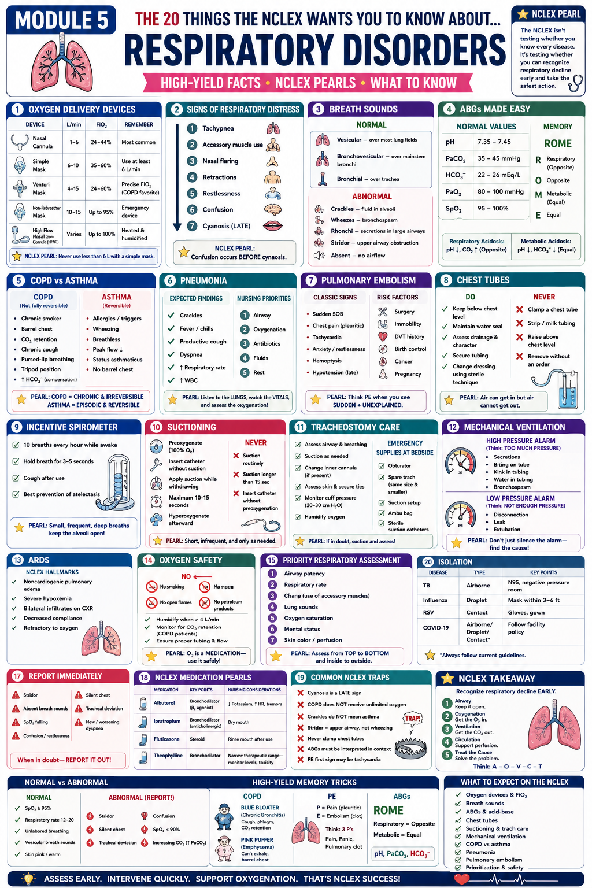

Assess Early. Intervene Quickly. Support Oxygenation. That's NCLEX Success.
Phase 1 · FoundationsWhy this module matters: The NCLEX isn't testing whether you know every respiratory disease. It's testing whether you can recognize respiratory decline early and take the safest action. Respiratory questions appear on almost every NCLEX — oxygenation is the most basic human need, and the nurse must act fast when it's compromised.
Every respiratory NCLEX question can be approached with this framework.
Right device = right FiO₂. Never use simple mask <6 L/min.
Crackles = fluid. Wheezes = bronchospasm. Stridor = EMERGENCY.
ROME method: Respiratory = Opposite. Metabolic = Equal.
Never clamp. Never raise above chest. Air can get in but can't get out.
High pressure = obstruction. Low pressure = disconnection. Never silence — find the cause.
Think PE when you see SUDDEN + UNEXPLAINED. ARDS = refractory hypoxia.

Respiratory = Opposite | Metabolic = Equal
1–6 L/min
6–10 L/min
4–15 L/min
10–15 L/min
Up to 60 L/min
| Disorder | pH | PaCO₂ | HCO₃⁻ | Common Causes |
|---|---|---|---|---|
| Respiratory Acidosis | ↓ <7.35 | ↑ >45 | Normal (or ↑ if compensating) | COPD, hypoventilation, opioid overdose, neuromuscular disease, PE |
| Respiratory Alkalosis | ↑ >7.45 | ↓ <35 | Normal (or ↓ if compensating) | Hyperventilation (anxiety, pain, fever, early PE, mechanical vent) |
| Metabolic Acidosis | ↓ <7.35 | Normal (or ↓ if compensating) | ↓ <22 | DKA, lactic acidosis, renal failure, diarrhea, sepsis |
| Metabolic Alkalosis | ↑ >7.45 | Normal (or ↑ if compensating) | ↑ >26 | Vomiting, NG suction, excess diuretics, antacid overuse |
| pH | PaCO₂ | HCO₃⁻ | Interpretation |
|---|---|---|---|
| 7.28 | 55 | 24 | Uncompensated Respiratory Acidosis |
| 7.50 | 28 | 22 | Uncompensated Respiratory Alkalosis |
| 7.30 | 40 | 18 | Uncompensated Metabolic Acidosis |
| 7.48 | 40 | 30 | Uncompensated Metabolic Alkalosis |
| 7.36 | 55 | 30 | Fully Compensated Respiratory Acidosis |
| 7.44 | 30 | 20 | Fully Compensated Respiratory Alkalosis |
| Feature | COPD | Asthma |
|---|---|---|
| Reversibility | NOT fully reversible | Reversible (between attacks) |
| Typical Patient | Chronic smoker, 40+ years old | Younger, allergies/triggers |
| Onset | Gradual, progressive | Episodic, triggered |
| Breath Sounds | Diminished, wheezes, prolonged expiration | Wheezes during attack; may be silent in severe |
| Classic Signs | Barrel chest, pursed-lip breathing, tripod position, chronic cough, CO₂ retention | Wheezing, breathlessness, cough, peak flow ↓, no barrel chest |
| O₂ Target | 88–92% SpO₂ (hypoxic drive — don't over-oxygenate) | ≥95% SpO₂ during attack |
| O₂ Device | Venturi mask (precise FiO₂ control) preferred | Non-rebreather in severe attack |
| ABG Finding | Chronic resp acidosis (↑CO₂, ↑HCO₃⁻ compensated) | Respiratory alkalosis early; acidosis in severe/late |
| HCO₃⁻ | ↑ (compensatory — chronically elevated) | Normal (between attacks) |
| Priority Meds | SABA (rescue), LABA + ICS (maintenance), ipratropium | SABA (rescue), ICS (maintenance), oral steroids for exacerbation |
Classic Signs (3 P's):
Risk Factors:
| Alarm | Means | Common Causes | Action |
|---|---|---|---|
| High Pressure | TOO MUCH pressure needed to deliver breath | Secretions/mucus plug · Biting tube · Kink in tubing · Water in tubing · Bronchospasm · Coughing | Suction · Reposition · Check tubing · Administer bronchodilator |
| Low Pressure | NOT ENOUGH pressure (air escaping) | Disconnection · Leak in circuit · Water in tubing · Extubation (accidental) | Check all connections · Reconnect · Call RT if tube displaced |
| Apnea Alarm | Patient not breathing within set time | Oversedation · Disconnection · Fatigue | Assess patient, stimulate, check connections · Notify RT/provider |
| Low Tidal Volume | Patient not getting full breath | Leak · Patient-vent asynchrony | Check circuit · Assess patient · Notify RT |
🚨 Emergency Supplies at Bedside ALWAYS:
The respiratory NCLEX framework — apply to every respiratory question
Respiratory = Opposite (pH and CO₂ go opposite directions). Metabolic = Equal (pH and HCO₃⁻ go same direction).
Pain (pleuritic) · Panic (anxiety/restlessness) · Pulmonary clot (hemoptysis, sudden SOB, tachycardia). Think PE when SUDDEN + UNEXPLAINED.
Never below 6 L/min — CO₂ accumulates in the mask and patient rebreathes it. If you need <6 L/min, switch to nasal cannula.
Clamping → tension pneumothorax. Raising → fluid drains back into chest. Keep it below, keep the seal, and never silence an alarm without finding the cause.
COPD patients breathe off hypoxic drive. Giving too much O₂ can blunt the drive to breathe → respiratory failure. Use Venturi mask for precise control. Target 88–92%, NOT 100%.
No wheeze sounds better — but in asthma it means no air is moving at all. Silent chest = status asthmaticus = emergency. Call for help immediately.
Think: something is BLOCKING the airflow (secretions, kink, bronchospasm, patient biting). Low vent alarm = air escaping somewhere (disconnection, leak, extubation).
Restlessness and confusion (↑CO₂ or ↓O₂ affecting the brain) come BEFORE visible cyanosis. Never wait for blue lips to act — act when you see confusion in a respiratory patient.
Increased dyspnea, purulent sputum, ↑CO₂. Priority: Venturi mask O₂ (88–92%), bronchodilators (albuterol + ipratropium), oral/IV steroids, antibiotics if infection suspected. Assess for respiratory fatigue — rising CO₂ with worsening LOC = may need intubation.
After surgery, splinting from pain → shallow breathing → atelectasis. Incentive spirometer q1h while awake, deep breathing, early ambulation, adequate pain control (so patient CAN take deep breaths), positioning HOB 30–45°.
Post-op day 3, sudden SOB + tachycardia + pleuritic chest pain + leg swelling. Priority: O₂, call provider, anticipate CT-PA order, heparin drip. Maintain bed rest (to prevent clot dislodgment). DVT prophylaxis is prevention: SCDs, LMWH, early ambulation.
High-pressure alarm: check for secretions (suction), kinks in tubing, patient biting (bite block), or bronchospasm (give bronchodilator). Low-pressure: check all connections, look for extubation. Document and report all alarm events. Never restrain without order.
Priority positioning: HOB 30–45° (semi-Fowler's) to facilitate lung expansion and prevent aspiration. Encourage fluids (unless restricted) — thins secretions. Encourage coughing and deep breathing. Monitor temp, WBC, sputum character, and O₂ sat trends.
Airborne precautions: N95 respirator (not surgical mask) for all staff entering room. Negative pressure room. Patient wears surgical mask when transported. Treatment: RIPE therapy (Rifampin, Isoniazid, Pyrazinamide, Ethambutol) × 2 months, then continue INH + Rifampin × 4 months.
Interpret each set without looking at your notes:
| pH | PaCO₂ | HCO₃⁻ | Your Interpretation |
|---|---|---|---|
| 7.24 | 52 | 24 | |
| 7.52 | 32 | 25 | |
| 7.30 | 38 | 16 | |
| 7.38 | 58 | 33 |
Write the correct device for each scenario:
Patient needs precise FiO₂, has COPD:
Patient needs up to 95% FiO₂ in respiratory emergency:
Patient needs 2 L/min for mild hypoxia:
Minimum flow rate for a simple mask:
List 3 things you should NEVER do with a chest tube and why:
Key differentiator for each:
PE clue:
Pneumonia clue:
Status asthmaticus clue: